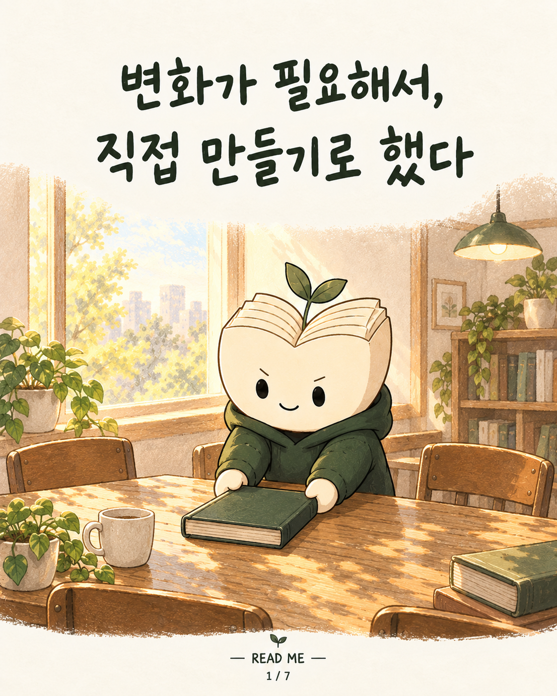
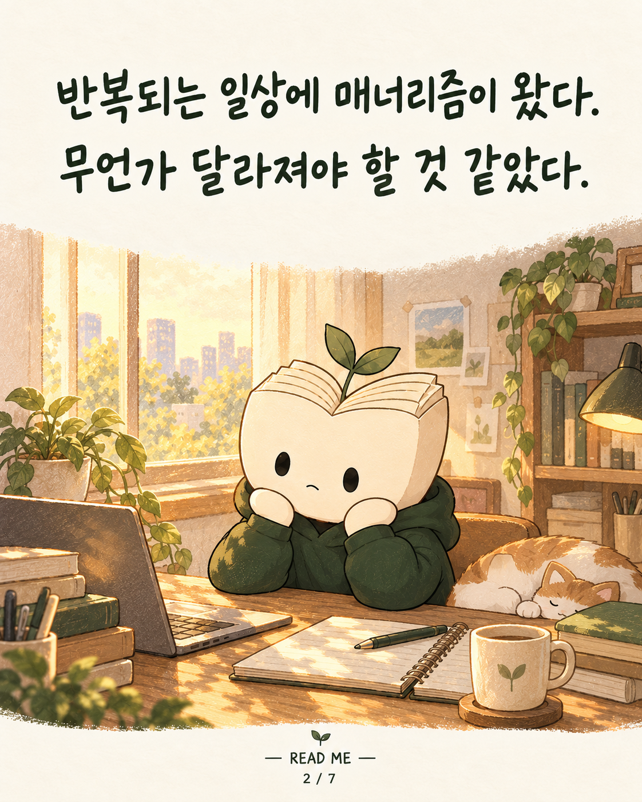
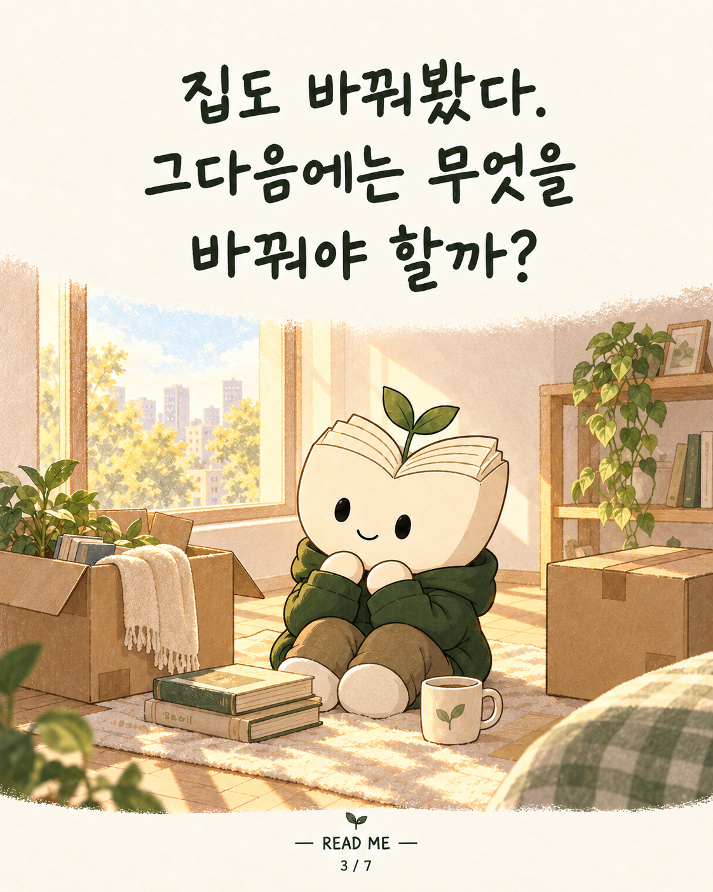
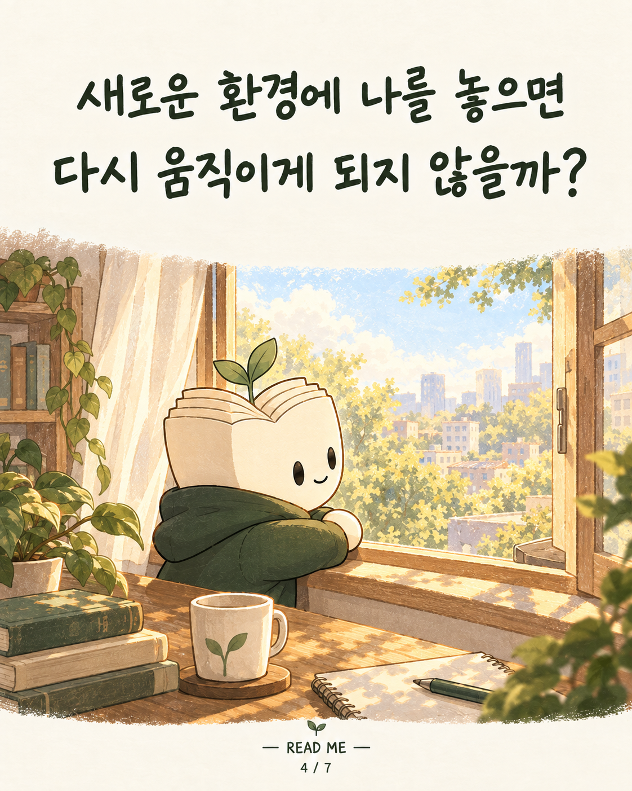
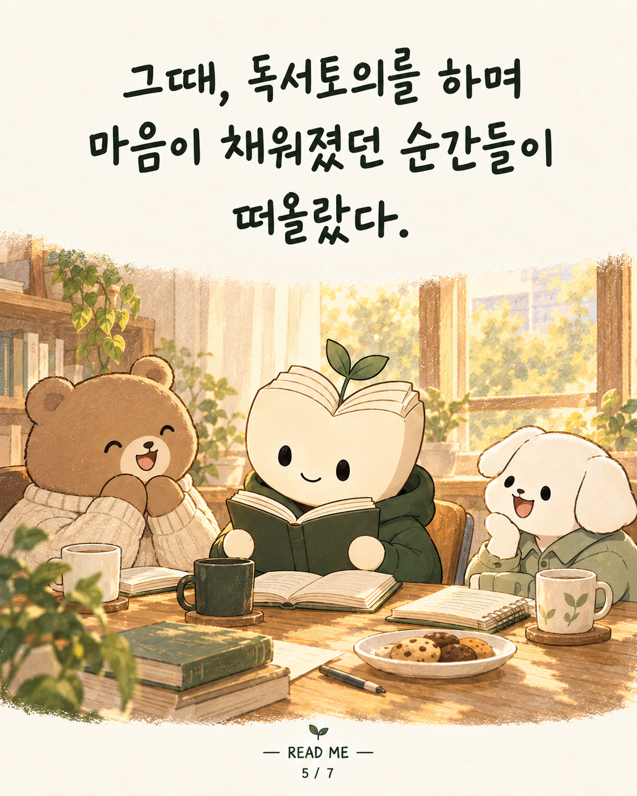
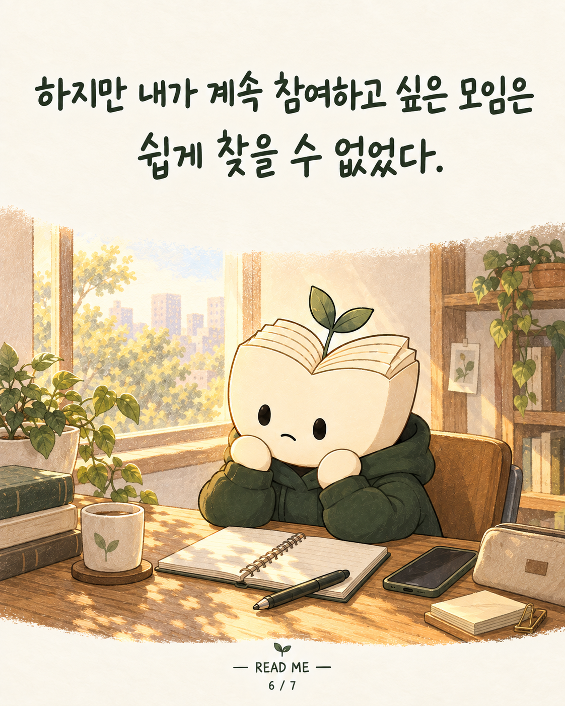
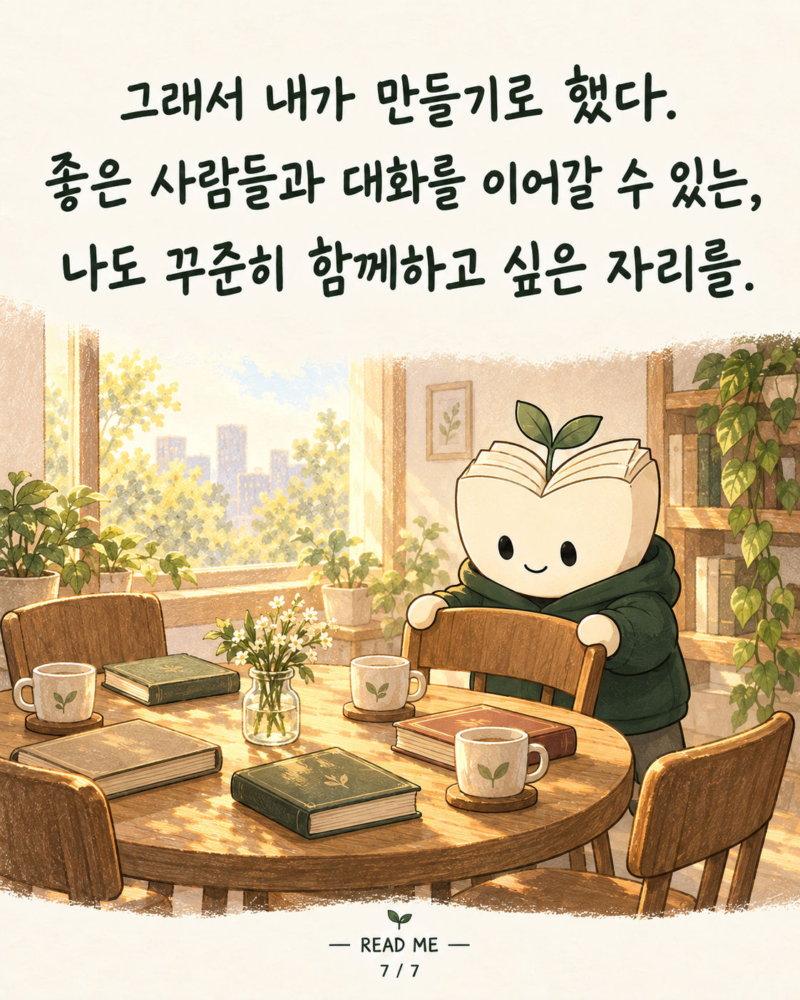

READ ME · 리미 인스타툰 6편

변화가 필요해서, 직접 만들기로 했다

반복되는 일상에 매너리즘이 왔다. 무언가 달라져야 할 것 같았다.

집도 바꿔봤다. 그다음에는 무엇을 바꿔야 할까?

새로운 환경에 나를 놓으면 다시 움직이게 되지 않을까?

그때, 독서토의를 하며 마음이 채워졌던 순간들이 떠올랐다.

하지만 내가 계속 참여하고 싶은 모임은 쉽게 찾을 수 없었다.

그래서 내가 만들기로 했다. 좋은 사람들과 대화를 이어갈 수 있는, 나도 꾸준히 함께하고 싶은 자리를.